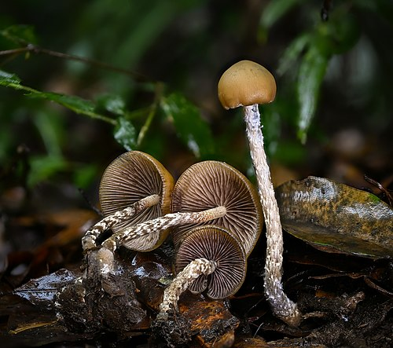

About Psilocybe zapotecorum
Psilocybe zapotecorum is a psilocybin mushroom which has psilocybin and psilocin as main active compounds. It is in the section Zapotecorum.
Etymology and history
It is named for the Zapotec Indians, who are native to the Sierra Madre mountains of Oaxaca Mexico, as well as the area they inhabited. According to Richard E. Schultes the Zapotec name translates as "Crown of thorns mushroom". Other sources give the Zapotec name as badao zoo translated as "hongo borracho", "drunken mushroom".